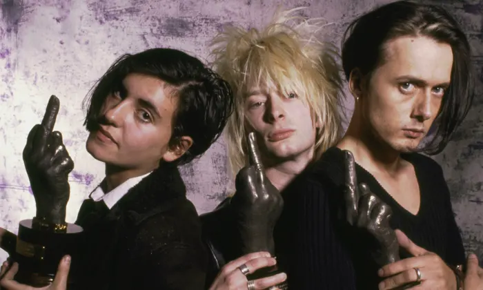

¿Qué reconocimientos tuvo la banda?
Desde 1993 hasta la actualidad



Resumen
Radiohead ha recibido 22 premios de 79 nominaciones. Han sido nominados 16 veces a los Brit Awards y son el grupo con más nominaciones en la historia del Mercury Prize, con cinco.
AMFT Awards
- 2016 — Best Animation — "Burn the Witch"
- 1998 — Best Contemporary Song — "Karma Police"
Antville Music Video Awards
- 2011 — Best Choreography — "Lotus Flower"
Ivor Novello Awards
- Best Song Musically and Lyrically — "Paranoid Android"
- 1998 — Best Contemporary Song — "Karma Police"
- 2004 — International Achievement in Musical Theater — Radiohead
- 2008 — Album Award — In Rainbows
Libera Awards
- 2017 — Best Live Act — Radiohead
- 2022 — Best Re-Issue — Kid A Mnesia
Meteor Music Awards
- 2008 — Best International Band — Radiohead
MTV Video Music Awards
- 2003 — Best Art Direction — "There There"
MTV Asia Awards
- 2008 — Innovation Award — Radiohead
MVPA Awards
- 2002 — Best Alternative Video — "Knives Out"
NME Awards
- 1994 — Best Single — "Creep"
- 1998 — Best Album — OK Computer
- 2001 — Best Band — Radiohead
- 2002 — Best Video — "Pyramid Song"
- 2004 — Best Album — Hail to the Thief
- 2004 — Best Album Artwork — Hail to the Thief
- 2004 — Best Video — "There There"
- 2008 — John Peel Award For Musical Innovation — Radiohead
- 2010 — Best Band Blog — www.radiohead.com
- 2017 — Best Reissue — OK Computer OKNOTOK 1997 2017
PLUG Independent Music Awards
- Artist of the Year — Radiohead
Q Awards
- 2002 — Best Act in the World Today — Radiohead
- 2000 — Best Act in the World Today — Radiohead
- 1997 — Best Album — OK Computer
UK Music Video Awards
- 2022 — Best Rock Video - UK — "If You Say the Word"